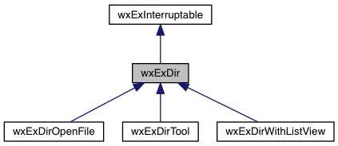

Offers FindFiles method. More...
#include <wx/extension/dir.h>
Inheritance diagram for wxExDir:

Public Member Functions | |
| wxExDir (const wxExPath &path, const std::string &filespec=std::string(), int flags=DIR_DEFAULT) | |
| Constructor. More... | |
| int | FindFiles () |
| Finds matching files. More... | |
| const auto & | GetDir () const |
| Returns the dir. | |
| const auto & | GetFileSpec () const |
| Returns the file spec. | |
| int | GetFlags () const |
| Returns the flags. | |
| virtual bool | OnDir (const wxExPath &) |
| Do something with the dir. More... | |
| virtual bool | OnFile (const wxExPath &) |
| Do something with the file. More... | |
Additional Inherited Members | |
 Static Public Member Functions inherited from wxExInterruptable Static Public Member Functions inherited from wxExInterruptable | |
| static bool | Cancel () |
| Cancel interruptable process. More... | |
| static bool | Cancelled () |
| Check whether process was cancelled. | |
| static bool | Running () |
| Is process running. | |
| static bool | Start () |
| Starts interruptable process. More... | |
| static void | Stop () |
| Stops interruptable process. | |
Detailed Description
Offers FindFiles method.
By overriding OnDir and OnFile you can take care of what to do with the result.
Constructor & Destructor Documentation
◆ wxExDir()
| wxExDir::wxExDir | ( | const wxExPath & | path, |
| const std::string & | filespec = std::string(), |
||
| int | flags = DIR_DEFAULT |
||
| ) |
Constructor.
- Parameters
-
path the dir to start finding filespec the files to be found flags finds all
Member Function Documentation
◆ FindFiles()
| int wxExDir::FindFiles | ( | ) |
Finds matching files.
This results in recursive calls for OnDir and OnFile. Returns number of files matching, or -1 if error.
◆ OnDir()
|
inlinevirtual |
Do something with the dir.
Not made pure virtual, to allow this class to be tested by calling FindFiles.
Reimplemented in wxExDirWithListView.
◆ OnFile()
|
inlinevirtual |
Do something with the file.
Not made pure virtual, to allow this class to be tested by calling FindFiles.
Reimplemented in wxExDirOpenFile, wxExDirWithListView, and wxExDirTool.